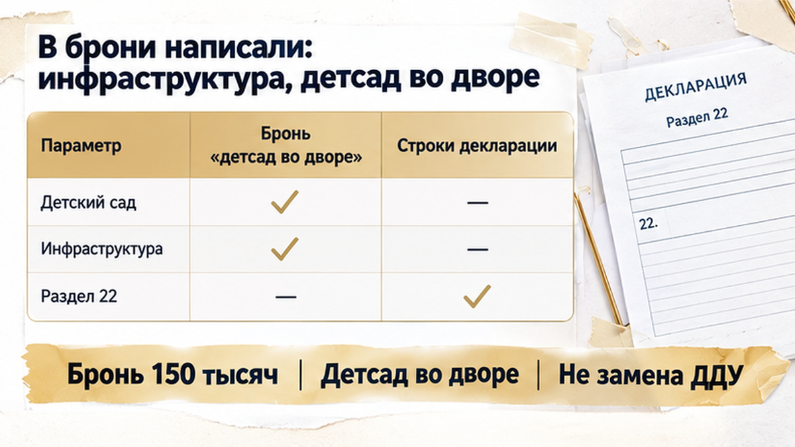
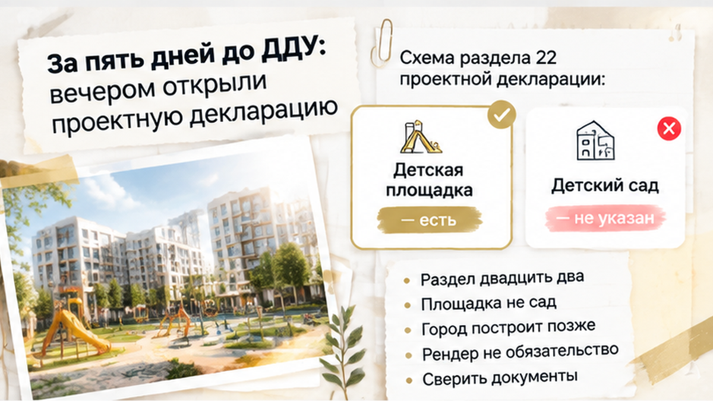
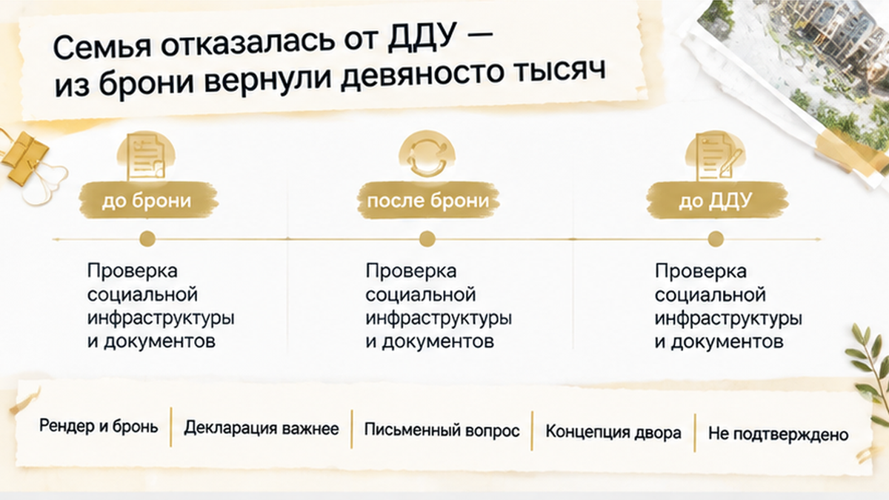
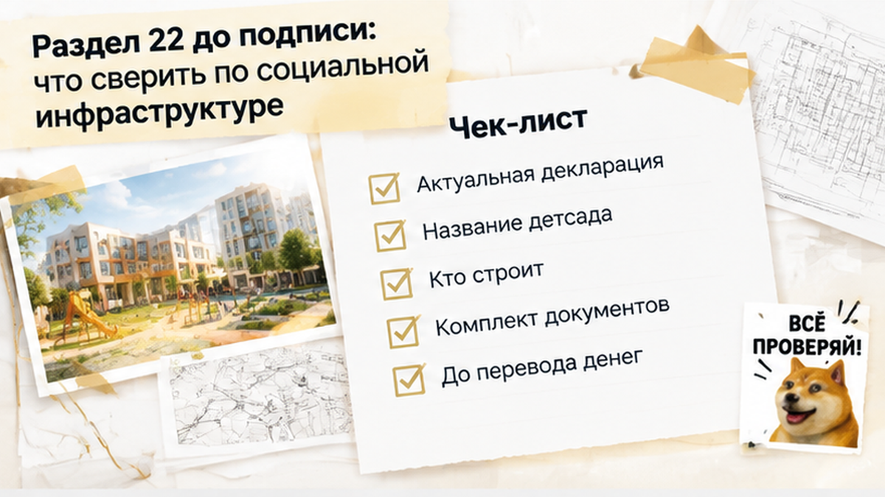

За пять дней до ДДУ семья с двумя детьми внесла бронь 150 000 ₽ за квартиру, а потом выяснила: обещанного детского сада в проектной декларации нет — и до эскроу родители остановили сделку. На рендере всё выглядело убедительно: зелёный двор, дорожка и отдельное светлое здание с табличкой «детский сад». В офисе менеджер подтвердил, что сад будет рядом с домом. Для детей трёх и шести лет это означало короткий путь из подъезда вместо ежедневных поездок через весь город.
Если вы выбираете квартиру в Тюмени и хотите заранее проверить документы и обещания застройщика, напишите Святославу Шакину, The Риэлтор.
В шоуруме семью подвели к экрану с визуализацией проекта. Между жилыми корпусами стояло отдельное здание, и подпись читалась без увеличения: «детский сад».
Родители переспросили: это настоящий объект во дворе или просто идея для красивой картинки? Менеджер ответил уверенно: инфраструктура предусмотрена, детский сад будет рядом с домом.
Для семьи это был не декоративный плюс. Старшему предстояла подготовка к школе, младшему нужно было место в саду, а ежедневные поездки через город не помещались в расчёт покупки. Поэтому рендер стал одним из аргументов в пользу конкретной квартиры.
Но картинка не отвечает на главные вопросы. Кто построит объект? За какие деньги? Кому его передадут? В одном проекте социальный объект может быть обязательством застройщика, в другом — планом города или отдельным соглашением.
Такую разницу приходится проверять по документам, а не по тому, насколько убедительно выглядит двор на экране. Похожая история бывает с землёй под будущий жилой комплекс: в офисе обещают одно, а в проектной декларации указаны другие условия. Я разбирал этот разрыв в материале о земле под жилым комплексом и условиях бронирования.

После просмотра семья внесла бронь — 150 000 ₽. В договоре менеджер записал: «инфраструктура: детсад во дворе».
На бумаге это выглядело серьёзнее, чем слова во время экскурсии. Родители подписали документ, чтобы сохранить квартиру, спокойно обсудить планировку и через несколько дней приехать в банк на оформление эскроу.
Обычный покупатель видит в такой строке подтверждение обещания. Профессионал сначала смотрит, что именно эта строка означает по договору: обязательство построить объект, рекламную формулировку или только условие возврата брони.
Запись в брони сама по себе не становится сведением проектной декларации и не заменяет приложения к ДДУ. Важны точные слова, связь с основной сделкой и то, совпадает ли обещание с официальными данными по проекту.
С отделкой бывает так же: в офисе обещают чистовую, а на приёмке покупатель видит голые стены. О том, почему устное обещание нужно сверять с ДДУ, — в материале про обещанную чистовую отделку и неподписанный акт.
До подписания ДДУ оставалось пять дней. Семья с двумя детьми — шести и трёх лет — уже представляла следующий шаг: офис застройщика, потом банк, перевод денег на эскроу. Детский сад во дворе был для родителей частью ежедневной логистики, а не красивой деталью на экране.
Накануне поездки они открыли карточку проекта в ЕИСЖС на наш.дом.рф. Хотели проверить не презентацию и не слова менеджера, а актуальную проектную декларацию.
В разделе социальной инфраструктуры родители увидели детскую площадку. Отдельного объекта «детский сад» там не было.
Обычный покупатель в такой момент снова звонит в офис: «Может, мы не там смотрим?» Профессионал делает иначе — ставит рядом рендер, рекламный текст, договор бронирования и декларацию, а потом смотрит, где именно обещание превращается в обязательство.
Проектная декларация — официальный документ, который застройщик раскрывает по установленной форме и обновляет, в том числе ежемесячно до 10-го числа. В ней важна не общая картинка двора, а конкретная запись о том, какой объект строят, кто отвечает за него и на каких условиях.
Похожая разница между устным обещанием и бумагой проявилась в истории с чистовой отделкой: на словах обещали готовую квартиру, а на приёмке покупатели увидели голые стены. Разбор этой ситуации — в материале о том, что именно обещано устно, а что закреплено ДДУ.
Родители написали менеджеру простой вопрос: почему на рендере стоит отдельное здание детского сада, а в декларации указан только объект благоустройства?
Ответ прозвучал уверенно: детский сад позже построит город, а изображение показывает концепцию будущего двора.

Раздел 22 проектной декларации посвящён объектам социальной инфраструктуры, которые полностью или частично финансируются участниками долевого строительства. Там указывают вид и назначение объекта, а также сведения о соглашениях с государством или муниципалитетом о передаче объекта в публичную собственность.
Детская площадка — это элемент благоустройства. Она не равна муниципальному детскому саду с отдельным зданием, количеством мест, заказчиком, источником финансирования и возможной передачей городу.
Фраза «город построит позже» сама по себе не доказывает, что сада не будет. Но её нужно проверять отдельно: кто указан заказчиком, есть ли утверждённая программа или соглашение, определены ли сроки и относится ли документ именно к этому проекту.
Если детский сад не внесён в раздел 22, декларация не устанавливает для застройщика обязательство построить и передать его за счёт участников ДДУ как указанный объект инфраструктуры. Рендер, реклама, слова менеджера и запись в брони такую запись не заменяют.
Такая же проверка нужна, когда в брони обещают газ в конкретный год, а в декларации стоит другая дата и другие условия. В материале о расхождении обещания в брони и сведений декларации показано, почему одну фразу нельзя принимать за готовое обязательство.
Отсутствие сада в разделе 22 не означает автоматически недействительность будущего ДДУ, невозможность ипотеки или мошенничество со стороны застройщика. Юридическая оценка зависит от всего комплекта: рекламы, переписки, брони, проекта договора, приложений и актуальной декларации.
Перед семьёй осталась конкретная развилка: подписать ДДУ, перечислить деньги на эскроу и надеяться на будущий городской объект либо остановиться до следующего этапа. Родители выбрали сначала проверить, что именно обещано документами.
До ДДУ оставалось пять дней. Родители должны были ехать в банк, переводить деньги на эскроу и становиться дольщиками. Но после проверки декларации увидели: отдельного детского сада там нет, указана только детская площадка.
На этом месте многие говорят себе: «Раз уж внесли бронь, надо идти до конца». Семья решила иначе. Они остановились до подписания основного договора и не стали платить за квартиру, обещание о которой существовало только на рендере, в разговоре с менеджером и в строке договора бронирования.
Из внесённых 150 000 ₽ им вернули 90 000 ₽. Ещё 60 000 ₽ удержали по условиям брони. Это не универсальное правило для всех сделок: сумма возврата зависит от текста соглашения, сроков и оснований отказа.
Но здесь важнее не сама потеря 60 000 ₽. Семья не перевела на эскроу всю сумму квартиры и не получила обязательство, в котором детский сад мог бы так и не появиться. Шестьдесят тысяч стали платой за проверку до сделки, а не после неё.
Новостройка от этого не превращается автоматически в плохой проект. Город действительно может построить сад позже. Просто это уже другая история: не обещание застройщика в составе проекта, а отдельный объект, который нужно подтверждать своими документами.
Если детский сад показали на рендере и пообещали в офисе, но в проектной декларации его нет, вы бы всё равно подписали ДДУ ради квартиры?


Раздел 22 проектной декларации — место, где проверяют социальную инфраструктуру проекта. Застройщик раскрывает этот документ по правилам 214-ФЗ и обновляет его ежемесячно, не позднее 10-го числа. Смотреть нужно актуальную версию в ЕИСЖС на наш.дом.рф, а не сохранённую презентацию из офиса.
Сначала найдите сам объект. Детский сад должен быть назван именно детским садом, с назначением и характеристиками. «Благоустройство», «детская площадка» и светлое здание на картинке этого не заменяют.
Затем проверьте, кто его строит и за какие деньги. В декларации могут быть сведения о соглашении с городом или другим публичным органом, а также о передаче объекта в муниципальную собственность. Если менеджер говорит «город построит позже», попросите назвать заказчика, программу, сроки и документ, на который он ссылается.
Отдельно соберите весь комплект, который повлиял на решение: рендер, рекламный буклет, переписку, договор бронирования, проект ДДУ, приложения и декларацию. В другом тюменском проекте покупателям обещали газ в 2026 году, а в декларации стояла дата 2028-го. Такие расхождения нужно увидеть до ДДУ.
Полезно попросить ответ письменно: «Какой объект на рендере является детским садом? Кто его строит? На каком документе основаны сроки?» Если в ответ снова звучит только «так будет по концепции» или «город потом сделает», перед вами пока не подтверждённое обязательство.
Рендер, слова менеджера и запись в брони могут иметь значение, но они не равны записи в проектной декларации. Юридические последствия расхождения зависят от точных формулировок и всего комплекта документов. Само отсутствие сада в разделе 22 не доказывает недействительность ДДУ, невозможность ипотеки или мошенничество.
Именно поэтому проверка нужна до аванса и эскроу. Шестьдесят тысяч рублей, которые семья потеряла на брони, — неприятный урок. Но он дешевле ситуации, когда после подписания ДДУ выясняется, что обещанный объект нигде не закреплён, а деньги уже ушли в сделку.
Я разбираю такие расхождения до перевода денег: что показали на рендере, что написали в брони и что действительно есть в разделе 22. Подписывайтесь на Telegram и добавляйтесь в MAX — там разборы документов без рекламного тумана.
Я бы на месте этой семьи тоже остановился до ДДУ. Не спорил бы с картинкой и не пытался угадать, построит ли город сад когда-нибудь. Сначала сверил бы раздел 22, письменные ответы и приложения к договору. Тогда решение о квартире принимает не рендер, а человек, который понимает, за что именно платит.